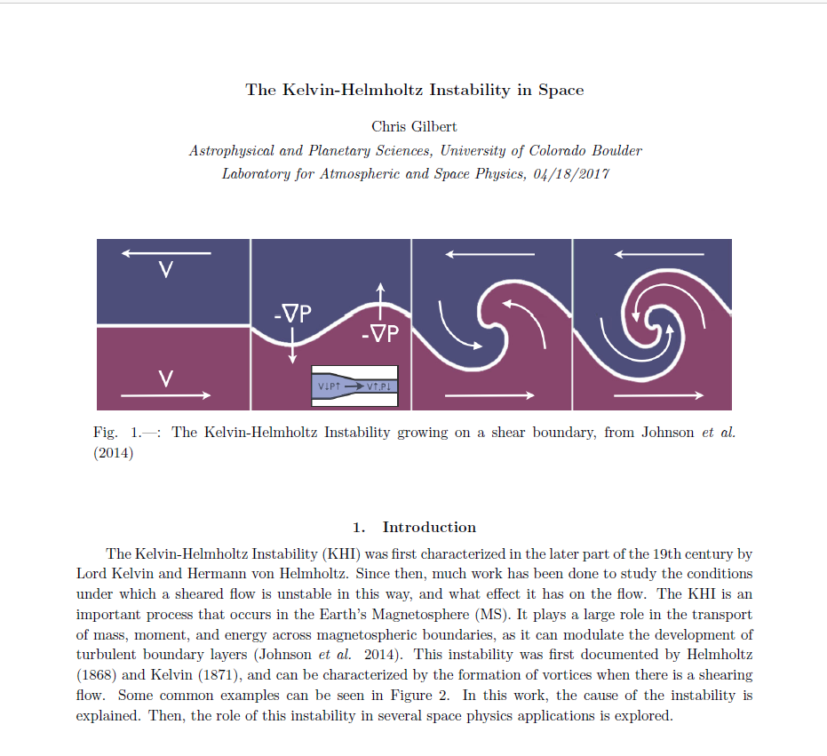
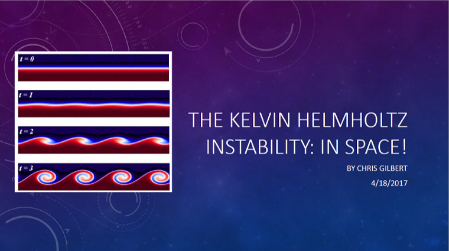

Paper
Read my paper
Click here to read my paper! It explains everything you need to know about the KH Instability.
A review by Dr. Gilly

Paper
Click here to read my paper! It explains everything you need to know about the KH Instability.

Slides
Click here to see my powerpoint slides! All the same information, but perhaps a better narrative.


What you are looking at is a simulation of the Kelvin-Helmholtz Instability. It was first characterized in 1868, and occurs when there are two fluids with relative motion, called shear, between them. This simulation was done in Dedalus, an open-source differential equations solver. Each of the boxes began with the same configuration, but a single parameter, called the Reynolds Number, was changed for each one. As you can see, the higher the Reynolds number, the more complex the structure becomes. This is because the diffusion of the fluid becomes very small, and can't smear out the structure. The second row shows vorticity, which is a measure of the "spin" of the fluid, also called the motion's "Curl."